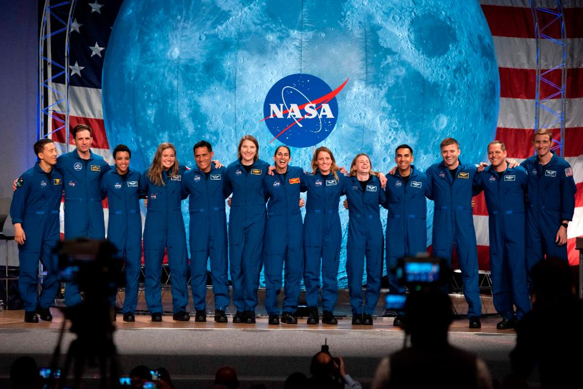
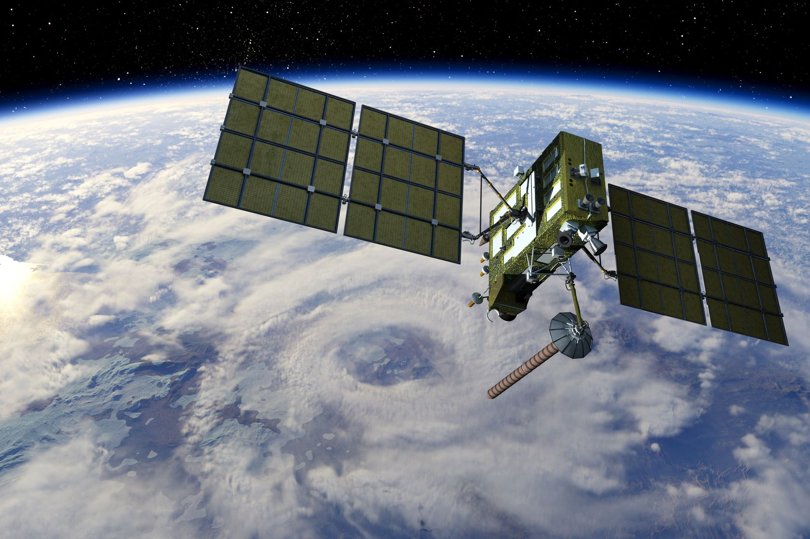
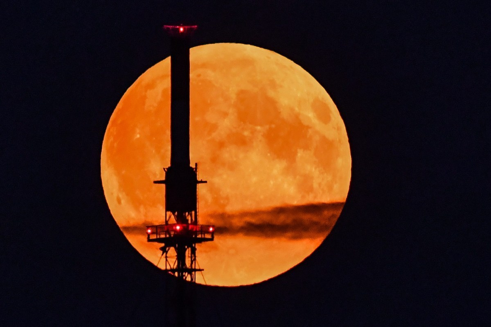

SpaceX aborts the Starlink launch due to ground-sensor reading

NASA Highlights Science, Business on Next Northrop Grumman Mission

UK to launch new international space collaborations later this

The Harvest Moon of 2020 rises tonight! But why is it in October?

NASA astronauts on SpaceX's Crew-1 flight will vote from space
Top Headlines
- 1NASA reveals retro 'worm' logo painted on moon-bound Artemis rocket.
- 2China is building a new rocket to fly its astronauts on the moon.
- 3Starburst Aerospace announces expansion in India.
- 4HyImpulse hybrid rocket motor roars to life for the first time.
- 5Russia's top space official tried to claim that the planet Venus belongs to the Kremlin.
- 6NASA Looks to Advance 3D Printing Construction Systems for the Moon and Mars.
- 7New Hubble data suggests there is an ingredient missing from current dark matter theories.